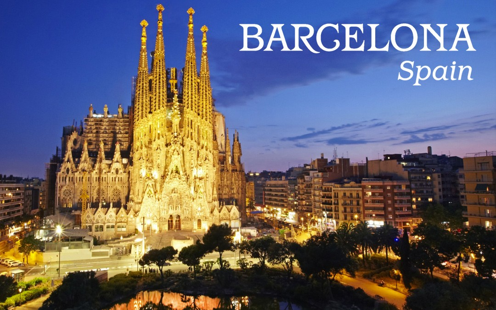
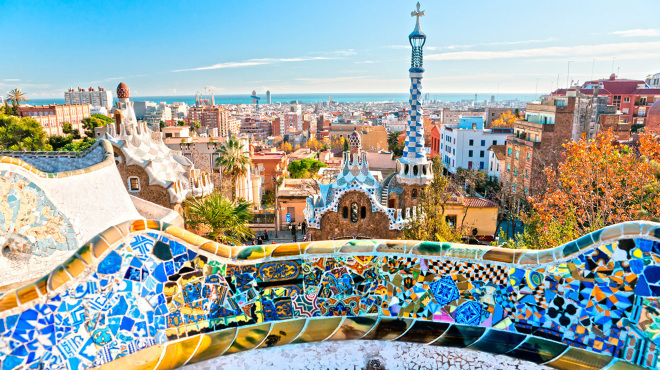
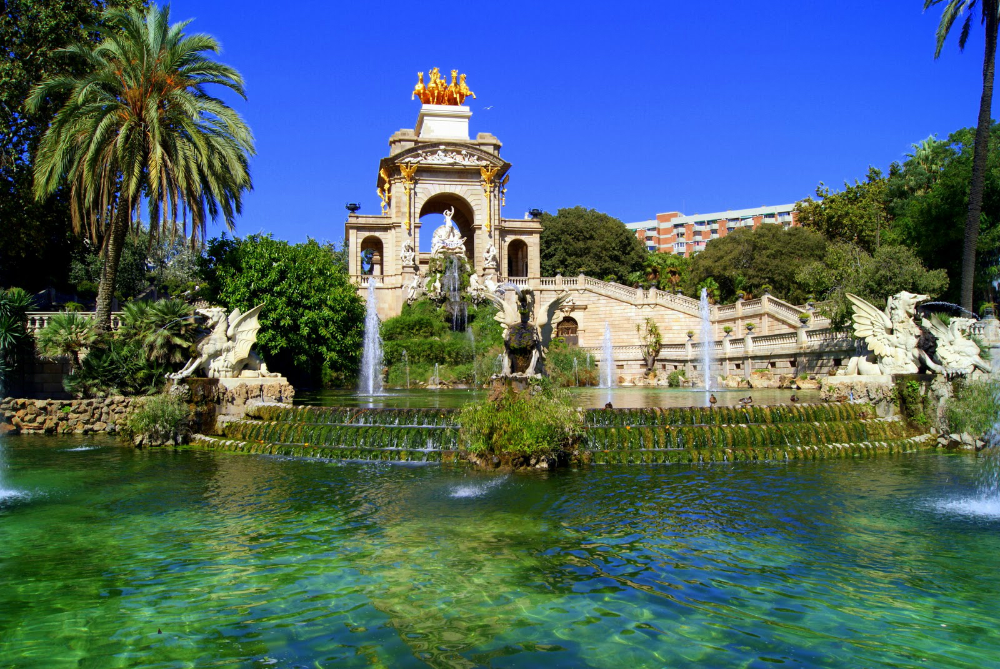

Home | Helpful Class Sites | Web Design Info | Dream Vacation
My family travels quite often, but my favorite trip was to Europe. We visited several countries, but we skipped over the country I was the most excited for. I have always wanted to visit Barcelona in Spain. Through the years of Spanish at school, I have become entrigued with the culture of this country. The following pictures are general images of the city of Barcelona.
Picture 1 Picture 2 Picture 3 Album

El Catedral de Barcelona at Twilight
This is a picture of one of the most famous beaches in Barcelona. Barceloneta Beach is the most crowded beach in the region with the largest amount of activities in the surrounding area. Although I don't prefer to be on the beach, I would still be satisfied with the pier activities and restaurants around.
This is a picture of the Tibidabo amusement park in Barcelona. This park was opened in 1901 with new attractions being added and updated constantly. The most famous attractions are the Miramiralls Hall of Mirrors, L'Embruixabruixes, and the L'avio Airplane Ride.
These pictures are from other attractions in Barcelona. The first is a very colorful park called Parc de Gaudi and the other is park around an oasis called Parc de Ciutadella. These relaxing locations are home to local wildlife and lovely sites.

